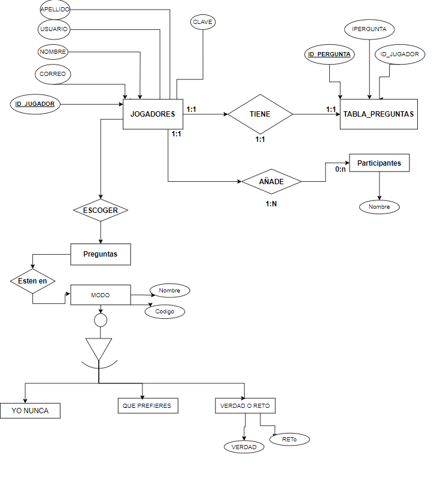
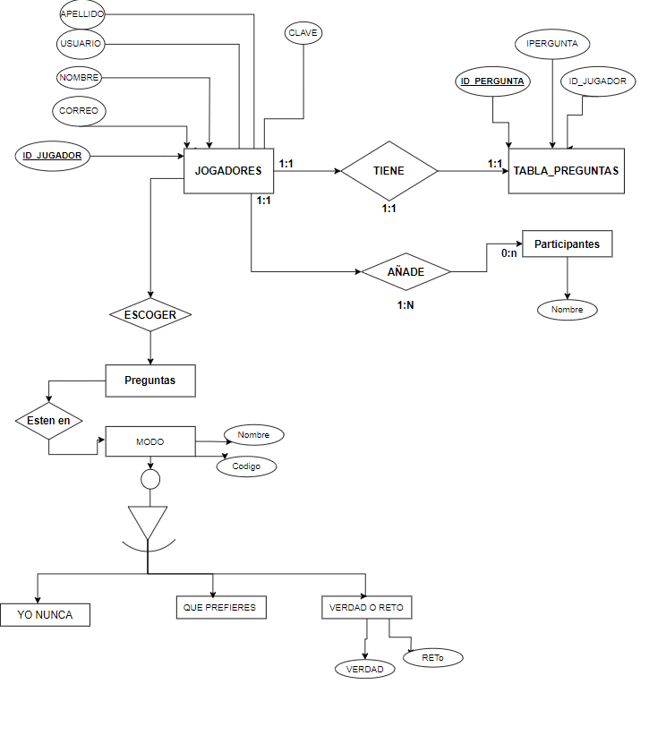
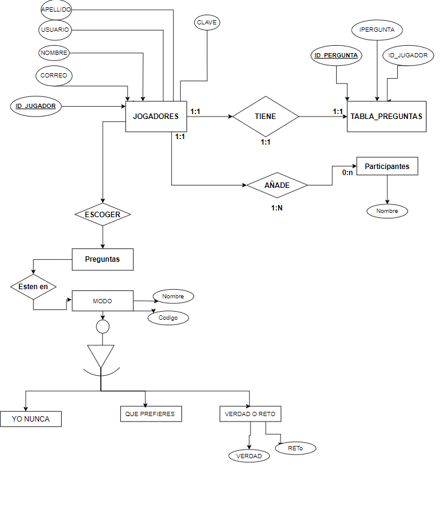

¿Alguna vez te has encontrado en una fiesta aburrida y sin saber qué hacer para animarla? Bueno, nuestra aplicación viene al rescate. Hemos creado una aplicación diseñada para ayudar a que las reuniones sociales sean más interesantes y emocionantes.
Nuestra aplicación cuenta con diferentes modos de juego para elegir, cada uno diseñado para adaptarse a diferentes situaciones y grupos de amigos. Desde preguntas atrevidas hasta desafíos y juegos de verdad o reto, hay algo para todos. Además, nuestra aplicación es altamente personalizable, lo que significa que puedes agregar tus propias preguntas y desafíos para hacer la experiencia aún más divertida.
Nuestra aplicación está desarrollada por tres alumnos de primero de Desarrollo de Aplicaciones Web (DAW): Sergio Rodríguez Costa, David Serrano Soares y Souhail Belmiloudi. Al final de la página podrás encontrar más información sobre ellos.
Este modo de juego consiste en que los jugadores deben hacer una declaración sobre algo que nunca han hecho antes. Si algún otro jugador ha hecho lo que se ha declarado, este debe tomar un trago. Es un juego muy popular en fiestas y reuniones sociales, y suele ser bastante divertido.
En este modo de juego, los jugadores deben elegir entre dos opciones presentadas, ambas con consecuencias divertidas o inesperadas. Si un jugador no puede elegir, debe tomar un trago. Este juego puede ser muy entretenido y es perfecto para grupos grandes.
Este es un clásico juego de fiesta en el que los jugadores deben elegir entre responder una pregunta honestamente o realizar un desafío. Si un jugador se niega a hacer una de las dos opciones, debe tomar un trago. Es un juego muy versátil que se puede adaptar a diferentes situaciones y niveles de dificultad.
Ésto no es un modo de juego como tal. En este lugar de la aplicación lo que podrás hacer es añadir tus propias preguntas personalizadas para que se añadan al juego. De esta manera puedes tener preguntas más personales para cada jugador.


Desarrollador
Desarrollador
Desarrollador